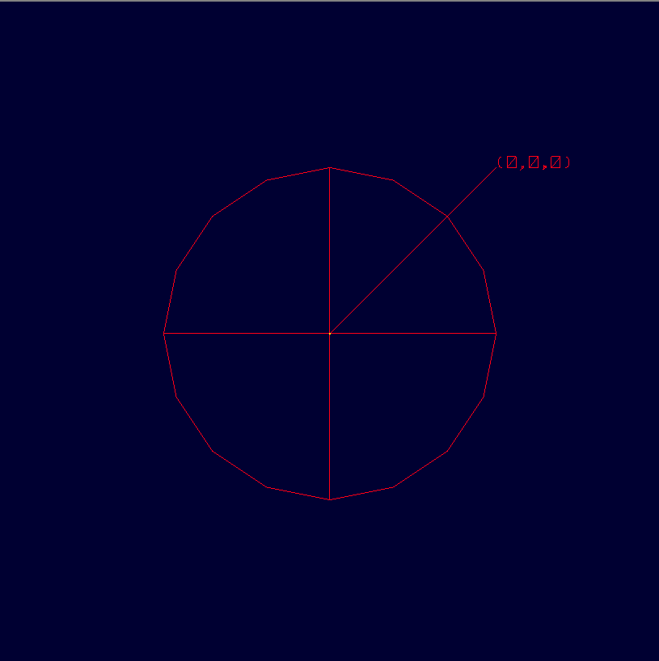

Annotations are currently created through the "in" command. Support for the annotation editor is yet to be provided. This primitive allows users to label models in the wireframe view. The primitive is aimed to be in the plane of the screen always, irrespective of the rotations. The annot object shown has the name annot_test. "get" and "l"(ell) commands give an overview of the structure. The input format can also be found below. Note that the second point that is entered by the user is relative to the first point. (This is done to make it easier, when the editor comes into place)
mged> in
Enter name of solid: annot_test
Enter solid type: annot
Enter the point to be annotated: 0
Enter Y: 0
Enter Z: 0
Enter the text label: (0,0,0)
Enter X,Y for the text placement: 3
Enter Y: 3
Enter the relative vertical position(1->bottom, 2->middle, 3->top): 3
Enter the relative horizontal position(1->right, 2->center, 3->left): 1
annot_test
Below is the get command
mged> get annot_test
result:
annotation
V {0 0 0}
VL { {3 3} {0 0} }
SL { { line S 0 E 1 }
{ label (0,0,0) ref_pt 0 position top right } }
The l command (ell).
mged> l annot_test
annot_test: 2D annotations (annotation)
V = (0 0 0)
2 vertices
Vertices:
0-(3 3) 1-(0 0)
Ant:
Line segment (3 3) <-> (0 0)
Reference point (3 3)
Relative position: top right
Label text: (0,0,0)
What we currently have is a foundation for the future work. Still, there are plenty of things to be done that will be accomplished with time.